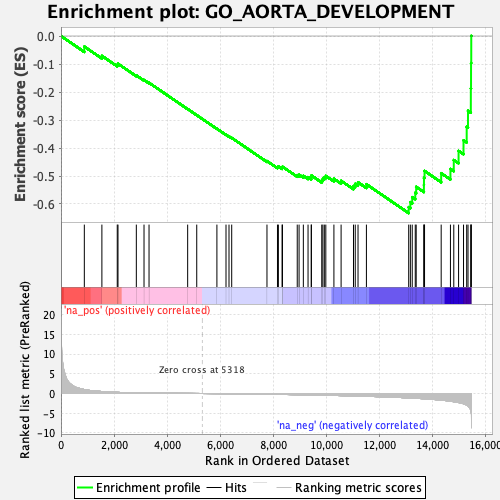
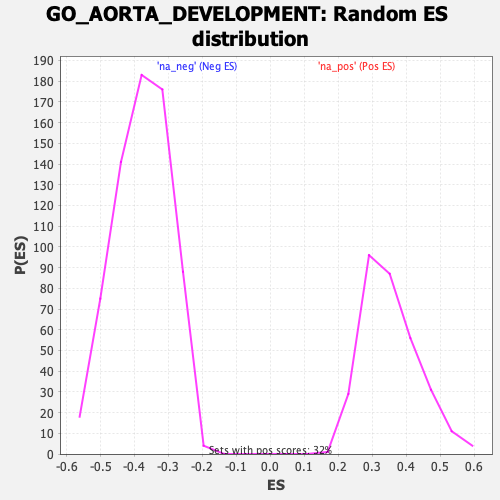

| | | Dataset | DE_genes |
| Phenotype | NoPhenotypeAvailable |
| Upregulated in class | na_neg |
| GeneSet | GO_AORTA_DEVELOPMENT |
| Enrichment Score (ES) | -0.632636 |
| Normalized Enrichment Score (NES) | -1.6776913 |
| Nominal p-value | 0.0 |
| FDR q-value | 0.09880156 |
| FWER p-Value | 0.813 |
Table: GSEA Results Summary

Fig 1: Enrichment plot: GO_AORTA_DEVELOPMENT
Profile of the Running ES Score & Positions of GeneSet Members on the Rank Ordered List
| PROBE | GENE SYMBOL | GENE_TITLE | RANK IN GENE LIST | RANK METRIC SCORE | RUNNING ES | CORE ENRICHMENT | | 1 | SIX1 | | | 879 | 1.001 | -0.0376 | No |
| 2 | NKX3-1 | | | 1541 | 0.499 | -0.0708 | No |
| 3 | PRDM1 | | | 2120 | 0.292 | -0.1027 | No |
| 4 | COL3A1 | | | 2148 | 0.281 | -0.0990 | No |
| 5 | LEP | | | 2839 | 0.157 | -0.1407 | No |
| 6 | ROBO1 | | | 3129 | 0.128 | -0.1569 | No |
| 7 | PKD2 | | | 3318 | 0.113 | -0.1669 | No |
| 8 | MIR29B1 | | | 4774 | 0.027 | -0.2608 | No |
| 9 | LRP2 | | | 5116 | 0.010 | -0.2827 | No |
| 10 | TBX1 | | | 5876 | -0.030 | -0.3313 | No |
| 11 | SUFU | | | 6219 | -0.054 | -0.3524 | No |
| 12 | MIR29B2 | | | 6332 | -0.061 | -0.3585 | No |
| 13 | BMPR1A | | | 6434 | -0.068 | -0.3638 | No |
| 14 | LRP1 | | | 7763 | -0.176 | -0.4465 | No |
| 15 | ADAMTS6 | | | 8159 | -0.214 | -0.4679 | No |
| 16 | NPRL3 | | | 8193 | -0.218 | -0.4659 | No |
| 17 | PROX1 | | | 8332 | -0.233 | -0.4703 | No |
| 18 | SEC24B | | | 8348 | -0.235 | -0.4667 | No |
| 19 | AP2B1 | | | 8904 | -0.298 | -0.4970 | No |
| 20 | SMAD6 | | | 8973 | -0.307 | -0.4954 | No |
| 21 | SNX17 | | | 9134 | -0.326 | -0.4995 | No |
| 22 | TAB1 | | | 9311 | -0.348 | -0.5042 | No |
| 23 | MYH10 | | | 9432 | -0.363 | -0.5049 | No |
| 24 | HEY2 | | | 9437 | -0.364 | -0.4981 | No |
| 25 | LOXL1 | | | 9828 | -0.421 | -0.5152 | No |
| 26 | DCTN5 | | | 9870 | -0.428 | -0.5096 | No |
| 27 | TGFB2 | | | 9925 | -0.436 | -0.5047 | No |
| 28 | ROBO2 | | | 9981 | -0.444 | -0.4996 | No |
| 29 | HEY1 | | | 10286 | -0.489 | -0.5099 | No |
| 30 | RBPJ | | | 10557 | -0.529 | -0.5171 | No |
| 31 | SRF | | | 11024 | -0.602 | -0.5357 | No |
| 32 | DNM2 | | | 11090 | -0.613 | -0.5280 | No |
| 33 | PRICKLE1 | | | 11195 | -0.635 | -0.5225 | No |
| 34 | CHD7 | | | 11511 | -0.701 | -0.5293 | No |
| 35 | NOTCH1 | | | 13105 | -1.107 | -0.6112 | Yes |
| 36 | LOX | | | 13167 | -1.125 | -0.5934 | Yes |
| 37 | MYLK | | | 13238 | -1.151 | -0.5756 | Yes |
| 38 | EFNB2 | | | 13352 | -1.195 | -0.5598 | Yes |
| 39 | LTBP1 | | | 13387 | -1.208 | -0.5386 | Yes |
| 40 | SOX4 | | | 13678 | -1.321 | -0.5318 | Yes |
| 41 | ADAMTS9 | | | 13681 | -1.322 | -0.5063 | Yes |
| 42 | HES1 | | | 13702 | -1.332 | -0.4819 | Yes |
| 43 | JAG1 | | | 14329 | -1.676 | -0.4900 | Yes |
| 44 | DLL4 | | | 14678 | -1.947 | -0.4748 | Yes |
| 45 | HECTD1 | | | 14804 | -2.064 | -0.4430 | Yes |
| 46 | PLXND1 | | | 14985 | -2.284 | -0.4104 | Yes |
| 47 | ENG | | | 15171 | -2.577 | -0.3725 | Yes |
| 48 | TBX2 | | | 15291 | -2.893 | -0.3242 | Yes |
| 49 | PDE2A | | | 15340 | -3.120 | -0.2668 | Yes |
| 50 | PDGFRB | | | 15447 | -4.465 | -0.1872 | Yes |
| 51 | NDST1 | | | 15455 | -4.695 | -0.0967 | Yes |
| 52 | ACVRL1 | | | 15463 | -5.045 | 0.0005 | Yes |
Table: GSEA details [plain text format]

Fig 2: GO_AORTA_DEVELOPMENT: Random ES distribution
Gene set null distribution of ES for GO_AORTA_DEVELOPMENT